Validation#
The ucla_plha code has been validated against open-source PSHA software and against published figures from the underlying ground motion and liquefaction triggering models. The validation exercises are organized into four Jupyter notebooks, each containing the comparison figures. All notebooks and input files are available in the validation directory of the GitHub repository.
Seismic hazard (PSHA)#
The PSHA implementation is benchmarked against OpenSHA for each of the four NGA-West2 ground motion models. For a common site and source configuration, hazard curves computed by ucla_plha are plotted alongside those produced by OpenSHA. The OpenSHA input settings used for the benchmark are recorded in the validation directory. See psha_validation.ipynb for the full comparison.
{kind=link}
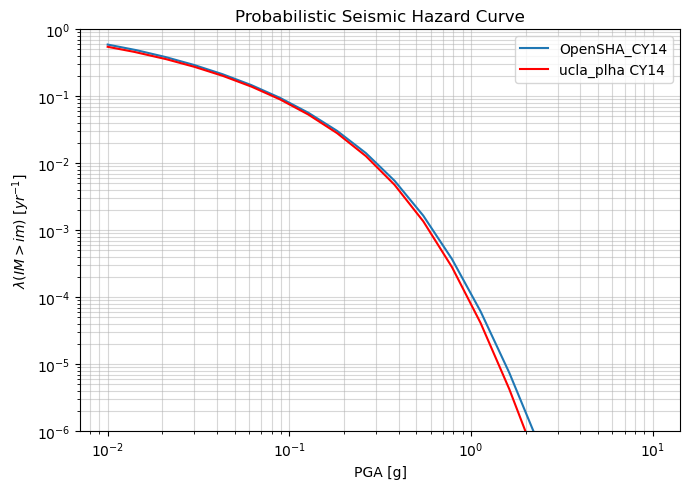
Comparison of ucla_plha and OpenSHA hazard curves using the Boore et al. (2014) BSSA14 ground motion model [BSSA14].#
{kind=link}
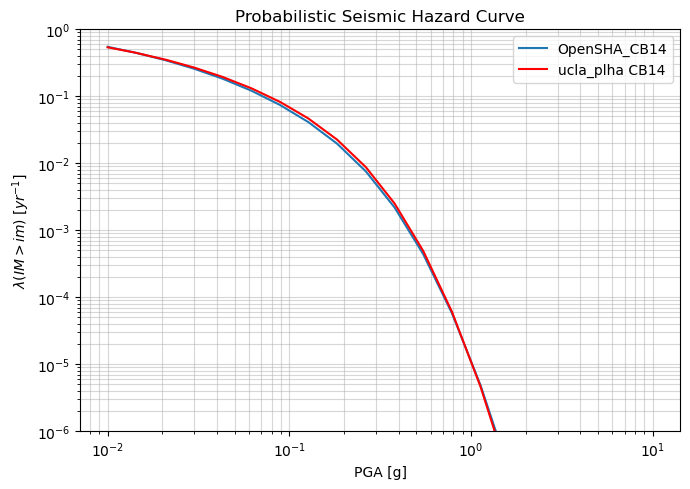
Comparison of ucla_plha and OpenSHA hazard curves using the Abrahamson et al. (2014) ASK14 ground motion model [ASK14].#
{kind=link}
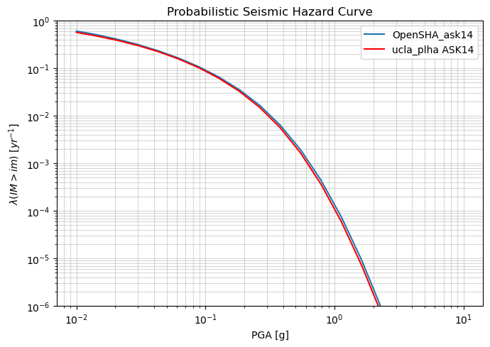
Comparison of ucla_plha and OpenSHA hazard curves using the Campbell and Bozorgnia (2014) CB14 ground motion model [CB14].#
{kind=link}
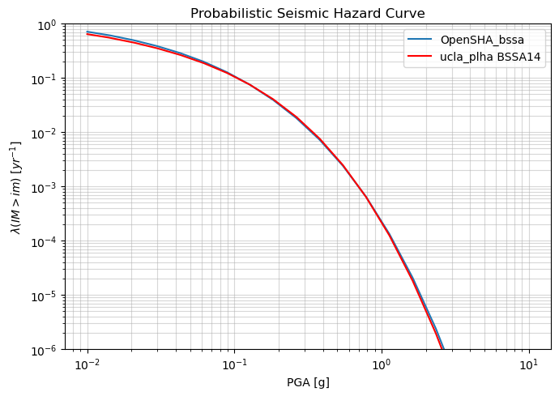
Comparison of ucla_plha and OpenSHA hazard curves using the Chiou and Youngs (2014) CY14 ground motion model [CY14].#
Ground motion models#
Each of the four NGA-West2 ground motion models is verified by reproducing published figures from the corresponding model documentation. ucla_plha results (open symbols) are plotted alongside reference values computed using pygmm (filled symbols) and the original published curves. See gmm.ipynb for the full comparison.
{kind=link}
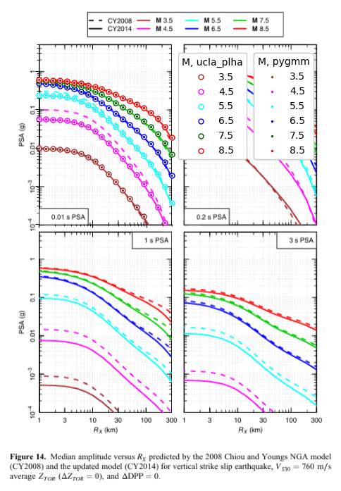
Reproduction of Figure 7 from Boore et al. (2014) [BSSA14]. Median PGV, PGA, and 5%-damped PSA as a function of \(R_{JB}\) for strike-slip earthquakes, \(V_{S30}\) = 760 m/s.#
{kind=link}
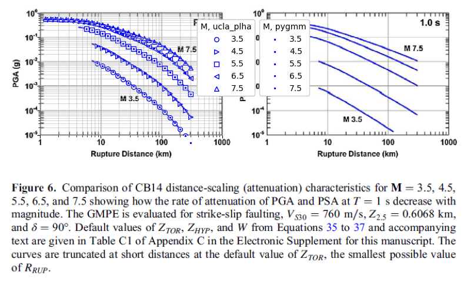
Reproduction of Figure 8 from Abrahamson et al. (2014) [ASK14]. Spectral acceleration scaling with distance for strike-slip earthquakes at a rock site (\(V_{S30}\) = 760 m/s).#
{kind=link}
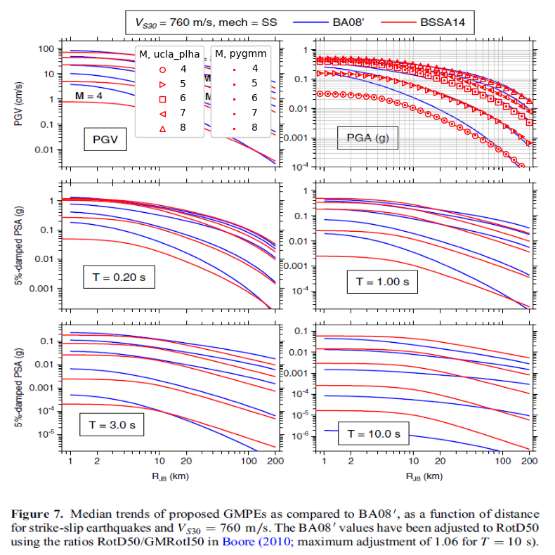
Reproduction of Figure 6 from Campbell and Bozorgnia (2014) [CB14]. PGA and PSA distance-scaling for strike-slip earthquakes, \(V_{S30}\) = 760 m/s, \(Z_{2.5}\) = 0.6068 km.#
{kind=link}
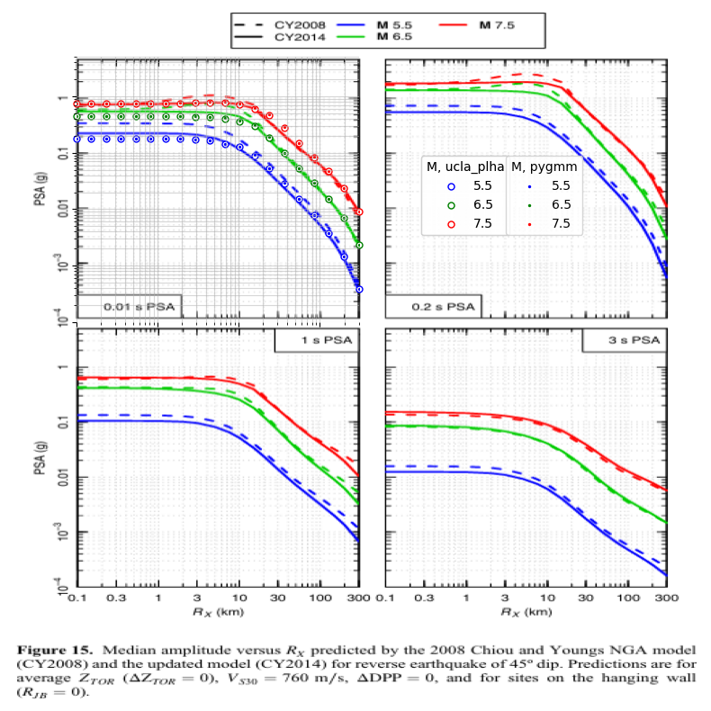
Reproduction of Figure 14 from Chiou and Youngs (2014) [CY14]. Median PSA versus \(R_X\) for vertical strike-slip earthquakes, \(V_{S30}\) = 760 m/s.#
{kind=link}
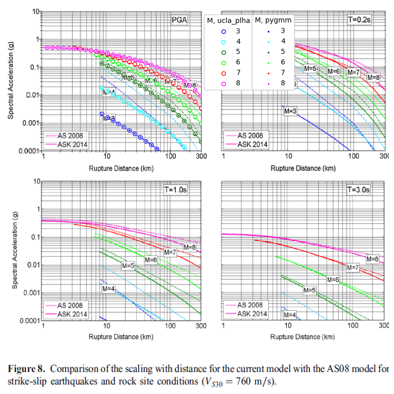
Reproduction of Figure 15 from Chiou and Youngs (2014) [CY14]. Median PSA versus \(R_X\) for reverse earthquakes with 45° dip, \(V_{S30}\) = 760 m/s.#
Liquefaction triggering models#
Each probabilistic liquefaction triggering model is verified by reproducing published figures from its original reference. ucla_plha probability contours are plotted alongside the published curves to confirm agreement. See liq.ipynb for the full comparison.
{kind=link}
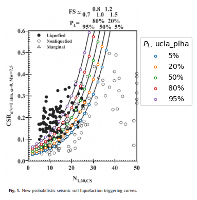
Reproduction of Figure 1 from Cetin et al. (2018) [CEA18]. Probabilistic liquefaction triggering curves in \(CSR\)–\(N_{1,60,CS}\) space.#
{kind=link}
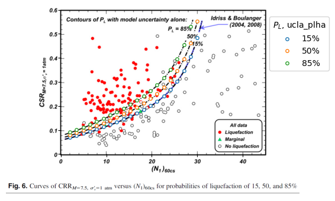
Reproduction of Figure 6 from Boulanger and Idriss (2012) [BI12]. \(CRR\) contours versus \((N_1)_{60cs}\) for probabilities of liquefaction of 15%, 50%, and 85%.#
{kind=link}
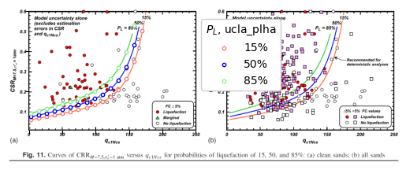
Reproduction of Figure 11 from Boulanger and Idriss (2016) [BI16]. \(CRR\) contours versus \(q_{c1Ncs}\) for clean sands and all sands.#
{kind=link}
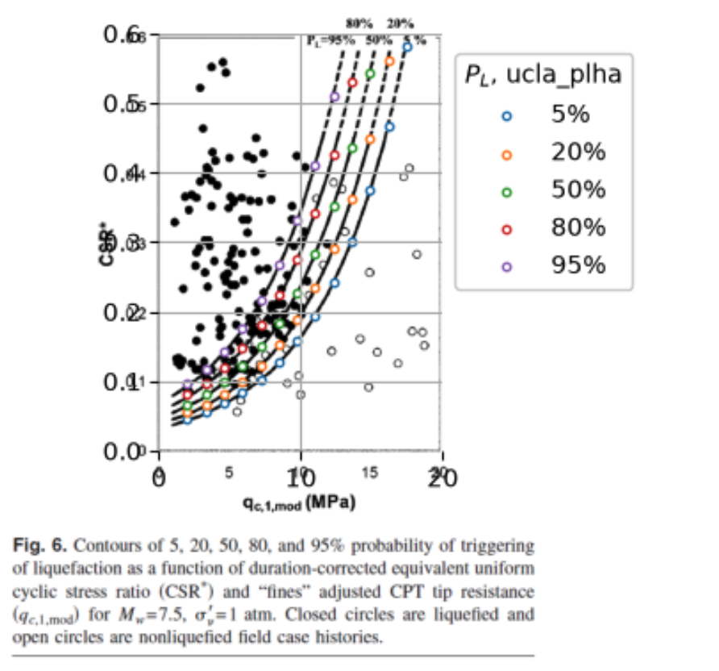
Reproduction of Figure 6 from Moss et al. (2006) [MEA06]. Probabilistic liquefaction triggering contours in \(CSR\)–\(q_{c,1,mod}\) space.#
Disaggregation#
The seismic hazard disaggregation is validated by comparing the magnitude-distance- epsilon disaggregation computed by ucla_plha against an independent calculation from OpenSHA. See PSHA_Disaggregation_Validation.ipynb for the full comparison.
{kind=link}
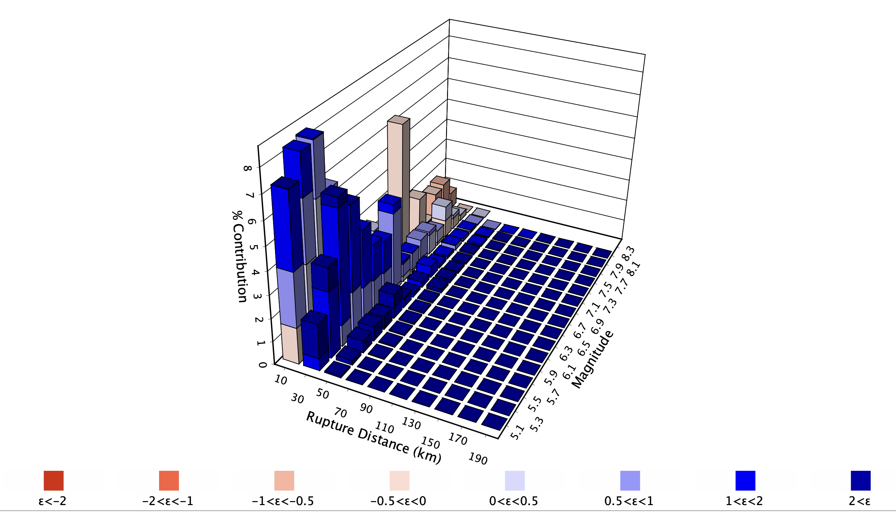
PSHA disaggregation at PGA = 0.237 g computed by ucla_plha. Bars show the percentage contribution to hazard from each magnitude, distance, and epsilon bin.#
{kind=link}
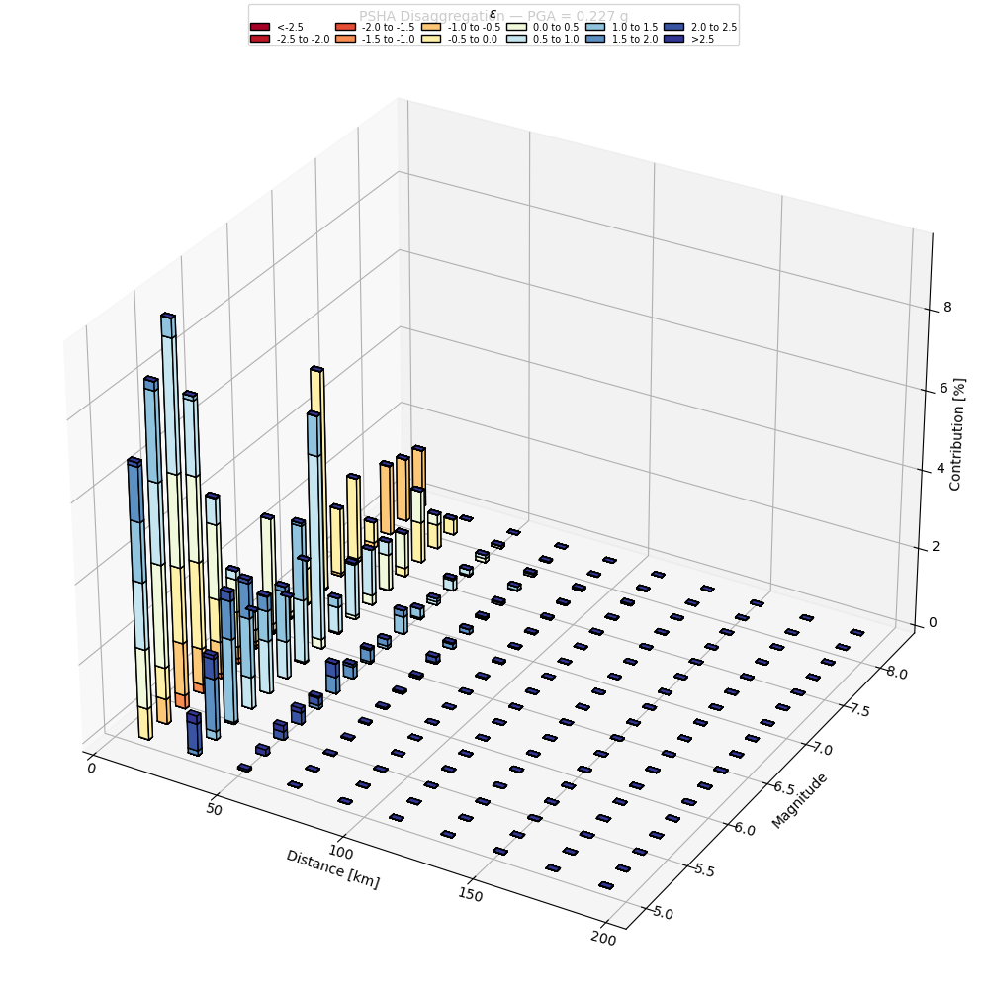
PSHA disaggregation at PGA = 0.237 g computed by OpenSHA for the same site and source configuration, for comparison with the ucla_plha result above.#
References#
Abrahamson, N. A., Silva, W. J., and Kamai, R. (2014). Summary of the ASK14 ground-motion relation for active crustal regions, Earthquake Spectra, 30(3), 1025-1055. DOI: 10.1193/070913EQS198M
Boore, D. M., Stewart, J. P., Seyhan, E., and Atkinson, G. M. (2014). NGA-West2 equations for predicting PGA, PGV, and 5%-damped PSA for shallow crustal earthquakes, Earthquake Spectra, 30(3), 1057-1085. DOI: 10.1193/070113EQS184M
Boulanger, R. W. and Idriss, I. M. (2012). Probabilistic Standard Penetration Test-Based Liquefaction-Triggering Procedure, Journal of Geotechnical and Geoenvironmental Engineering, 138(10), 1185-1195. DOI: 10.1061/(ASCE)GT.1943-5606.0000700
Boulanger, R. W. and Idriss, I. M. (2016). CPT-Based Liquefaction Triggering Procedure, Journal of Geotechnical and Geoenvironmental Engineering, 142(2), 04015065. DOI: 10.1061/(ASCE)GT.1943-5606.0001388
Campbell, K. W. and Bozorgnia, Y. (2014). NGA-West2 ground motion model for the average horizontal components of PGA, PGV, and 5%-damped linear acceleration response spectra, Earthquake Spectra, 30(3), 1087-1115. DOI: 10.1193/062913EQS175M
Cetin, K. O., Seed, R. B., Kayen, R. E., Moss, R. E. S., Bilge, H. T., Ilgac, M., and Chowdhury, K. (2018). SPT-based probabilistic and deterministic assessment of seismic soil liquefaction triggering hazard, Soil Dynamics and Earthquake Engineering, 115, 698-709. DOI: 10.1016/j.soildyn.2018.09.012
Chiou, B. S.-J. and Youngs, R. R. (2014). Update of the Chiou and Youngs NGA model for the average horizontal component of peak ground motion and response spectra, Earthquake Spectra, 30(3), 1117-1153. DOI: 10.1193/072813EQS219M
Field, E. H., Biasi, G. P., Bird, P., Dawson, T. E., Felzer, K. R., Jackson, D. D., Johnson, K. M., Jordan, T. H., Madden, C., Michael, A. J., Milner, K. R., Page, M. T., Parsons, T., Powers, P. M., Shaw, B. E., Thatcher, W. R., Weldon, R. J. II, and Zeng, Y. (2013). Uniform California earthquake rupture forecast, version 3 (UCERF3) — The time-independent model, U.S. Geological Survey Open-File Report, 2013-1165. DOI: 10.3133/ofr20131165
Moss, R. E. S., Seed, R. B., Kayen, R. E., Stewart, J. P., Der Kiureghian, A., and Cetin, K. O. (2006). CPT-Based probabilistic and deterministic assessment of in situ seismic soil liquefaction potential, Journal of Geotechnical and Geoenvironmental Engineering, 132(8), 1032-1051. DOI: 10.1061/(ASCE)1090-0241(2006)132:8(1032)
Ulmer, K. J., Hudson, K. S., Brandenberg, S. J., Zimmaro, P., Pretell, R., Carlton, J. B., Kramer, S. L., and Stewart, J. P. (2024). Next Generation Liquefaction models for susceptibility, triggering, and manifestation, Rev. 1, Research Information Letter, Office of Nuclear Regulatory Research, United States Nuclear Regulatory Commission, Report No. RIL2024-13. link